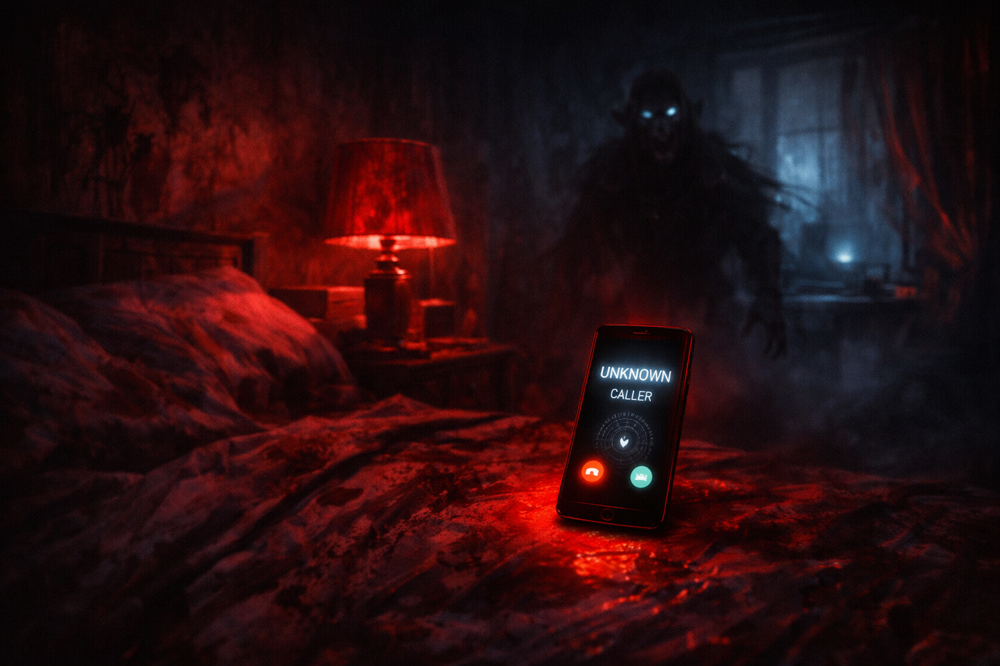
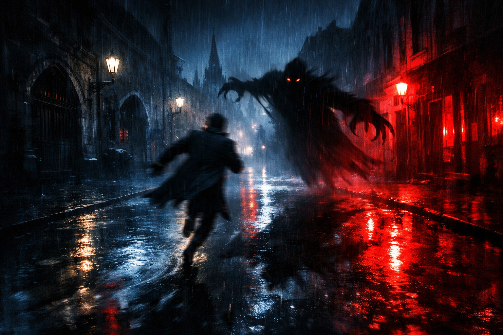
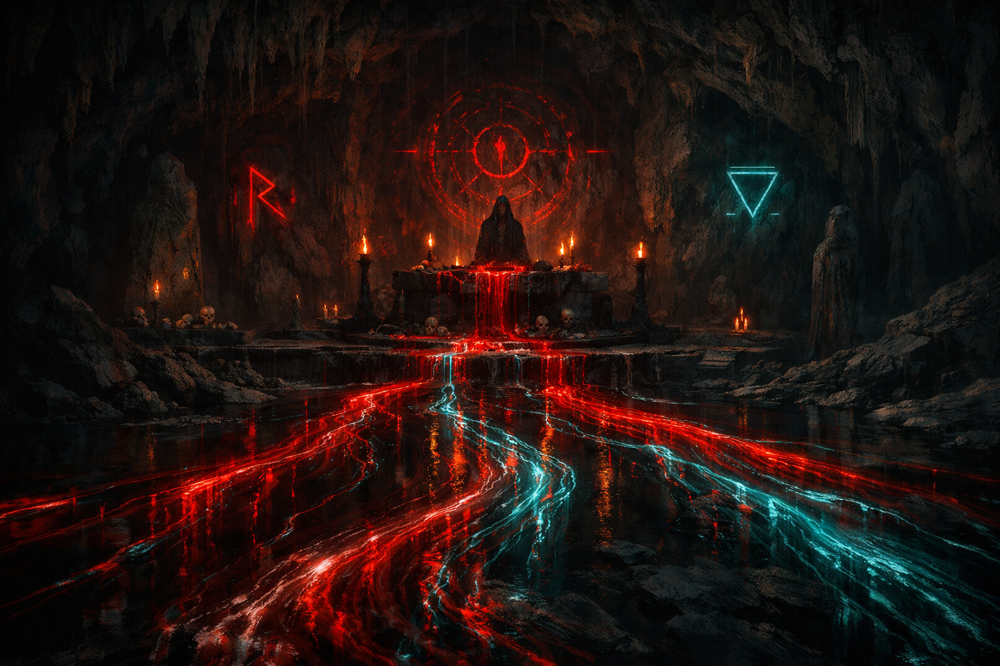

La Última Llamada
En esta aventura de terror narrativa, una sola llamada telefónica lo cambia todo. Tus padres están siendo perseguidos, los vampiros acechan en las sombras y cada decisión puede conducirte a la salvación… o a una muerte inevitable. A través de calles desiertas, sótanos ocultos y encuentros sobrenaturales, la historia se ramifica en múltiples finales, desde los más trágicos hasta los más esperanzadores. Una experiencia intensa donde el miedo, la tensión y las elecciones del jugador son el verdadero motor de la historia.


